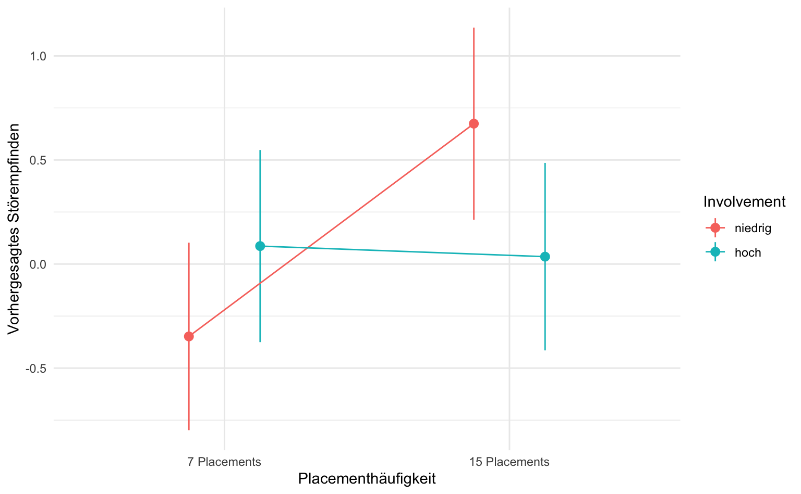
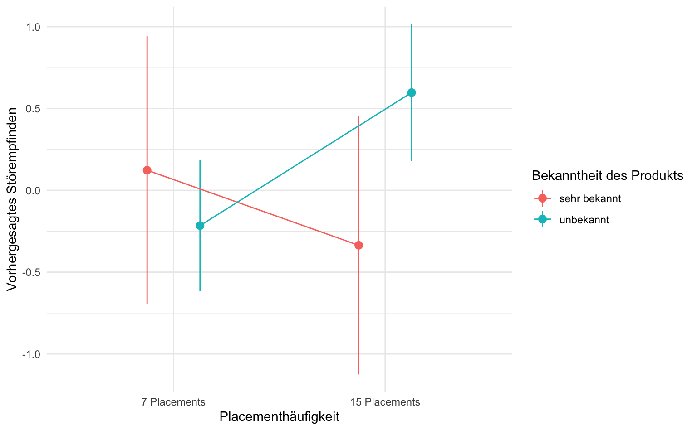

library(marginaleffects)
library(tidyverse)
library(report)
theme_set(theme_minimal())2 Moderationsanalyse
Quelle
Wirth, W., Matthes, J., Schemer, C., & Stämpfli, I. (2009). Glaubwürdigkeitsverlust durch programmintegrierte Werbung? Publizistik, 54(1), 64–81. https://doi.org/10.1007/s11616-009-0026-0
2.1 Pakete und Daten
Zunächst laden wir das marginaleffects- sowie das tidyverse- und das report-Paket.
Für die Moderationsanalyse benötigen wir den SPSS-Datensatz productplacement_moderation.sav. Mit der mutate-Funktion passen wir zwei Variablen an: Die Variable Placementhäufigkeit wird in einen Faktor umgewandelt und ungenutzte Kategorien werden mit fct_drop() entfernt. Ebenso wird die Variable Involvement in einen Faktor umgewandelt. Schließlich entfernt die Funktion zap_labels() die SPSS-Labels, um die Daten ohne zusätzliche Kennzeichnungen zu verwenden. Der Datensatz enthält 6 Spalten. eine laufende Nummer (lfdn), Placementhäufigkeit, Involvement, Bekanntheit und Störempfinden.
d_pp2 <- haven::read_sav("data/productplacement_moderation.sav") |>
mutate(
Placementhäufigkeit = as_factor(Placementhäufigkeit) |> fct_drop(),
Involvement = as_factor(Involvement)
) |>
haven::zap_labels() |>
select(-onefaktor)
d_pp2# A tibble: 82 × 5
lfdn Placementhäufigkeit Involvement Bekanntheit Störempfinden
<dbl> <fct> <fct> <dbl> <dbl>
1 72 7 Placements niedrig 1 -0.0529
2 64 7 Placements niedrig 1 -1.29
3 65 7 Placements niedrig 4 -0.362
4 66 7 Placements niedrig 1 -0.982
5 63 7 Placements niedrig 1 -0.672
# ℹ 77 more rows2.2 Kategorieller Moderator
Wir untersuchen, wie sich das Störempfinden je nach den Kategorien von Placementhäufigkeit (7 oder 15) und Involvement (hoch/niedrig) verändert. Die Variable Involvement ist hier der kategorialer Moderator.
Als Erstes gruppieren wir mit group_by den Datensatz basierend auf den Kategorien von Placementhäufigkeit und Involvement und berechnen den Mittelwert, die Standardabweichung und die Anzahl der Beobachtungen für das Störempfinden in jeder Gruppe.
d_pp2 |>
group_by(Placementhäufigkeit, Involvement) |>
summarise(
M = mean(Störempfinden, na.rm = TRUE),
SD = sd(Störempfinden, na.rm = TRUE),
n = n()
)# A tibble: 4 × 5
# Groups: Placementhäufigkeit [2]
Placementhäufigkeit Involvement M SD n
<fct> <fct> <dbl> <dbl> <int>
1 7 Placements niedrig -0.348 0.638 21
2 7 Placements hoch 0.0864 0.955 20
3 15 Placements niedrig 0.675 1.28 20
4 15 Placements hoch 0.0355 1.22 21Der Output zeigt, dass bei 7 Placements die Gruppe mit niedrigem Involvement ein geringeres Störempfinden hat als die mit hohem Involvement. Bei 15 Placements ist das Störempfinden in der Gruppe mit niedrigem Involvement höher, während es bei hohem Involvement deutlich niedriger bleibt.
2.2.1 Zweifaktorielle ANOVA und moderierte Regression
Für die zweifaktorielle ANOVA verwenden wir die Funktion aov(). Um eine Interaktion herzustellen benutzen wir das Sternchen (*), was bedeutet, dass neben den Haupteffekten der einzelnen Variablen auch deren gemeinsamer Einfluss auf die abhängige Variable, in diesem Fall das Störempfinden, untersucht wird. Wie immer kommt zum Schluss die report_table()-Funktion. Wir führen die zweifaktorielle ANOVA durch und speichern das Ergebnis im Objekt results_aov_involve.
results_aov_involve <- aov(Störempfinden ~ Placementhäufigkeit * Involvement, data = d_pp2)
report::report_table(results_aov_involve)Parameter | Sum_Squares | df | Mean_Square | F | p | Eta2 (partial) | Eta2_partial 95% CI
----------------------------------------------------------------------------------------------------------------------
Placementhäufigkeit | 4.79 | 1 | 4.79 | 4.32 | 0.041 | 0.05 | [0.00, 1.00]
Involvement | 0.22 | 1 | 0.22 | 0.19 | 0.661 | 2.48e-03 | [0.00, 1.00]
Placementhäufigkeit:Involvement | 5.90 | 1 | 5.90 | 5.32 | 0.024 | 0.06 | [0.00, 1.00]
Residuals | 86.50 | 78 | 1.11 | | | | In unserem Fall zeigt sich, dass sich die Gruppen hinsichtlich ihres Störempfindens aufgrund der Placementhäufigkeit statistisch signifikant unterscheiden (F(1, 78) = 4.32, p = .041), nicht jedoch nach Involvement. Relevant ist nun die Interaktion zwischen Placementhäufigkeit und Involvement (F(1, 78) = 5.32, p = .024), was darauf hinweist, dass der Effekt der Placementhäufigkeit auf das Störempfinden je nach Involvement-Level unterschiedlich ausfällt.
Um eine moderierte Regression zu berechnen verwenden wir die lm()-Funktion und wie auch bei der zweifaktoriellen ANOVA wird hier die Interaktion durch das Sternchen (*) angezeigt. Wie gewohnt kommt die report_table()-Funktion und das Ergbenis wird in dem Objekt results_involvegespeichert. Wie wir bereits gesehen haben, sind ANOVA und Regression statistisch identisch, wir bekommen lediglich einige andere Koeffizienten angezeigt.
results_involve <- lm(Störempfinden ~ Placementhäufigkeit * Involvement, data = d_pp2)
report::report_table(results_involve)Parameter | Coefficient | 95% CI | t(78) | p | Std. Coef. | Std. Coef. 95% CI | Fit
-------------------------------------------------------------------------------------------------------------------------------------------------
(Intercept) | -0.35 | [-0.81, 0.11] | -1.51 | 0.134 | -0.41 | [-0.83, 0.00] |
Placementhäufigkeit [15 Placements] | 1.02 | [ 0.37, 1.68] | 3.11 | 0.003 | 0.93 | [ 0.33, 1.53] |
Involvement [hoch] | 0.43 | [-0.22, 1.09] | 1.32 | 0.191 | 0.40 | [-0.20, 0.99] |
Placementhäufigkeit [15 Placements] × Involvement [hoch] | -1.07 | [-2.00, -0.15] | -2.31 | 0.024 | -0.98 | [-1.82, -0.13] |
| | | | | | |
AIC | | | | | | | 247.09
AICc | | | | | | | 247.88
BIC | | | | | | | 259.12
R2 | | | | | | | 0.11
R2 (adj.) | | | | | | | 0.08
Sigma | | | | | | | 1.05Bei der moderierten Regression werden grundsätzlich konditionale Effekte ausgegeben, d.h. für jede Variable, die im Interaktionsterm enthalten ist, gilt: Die ist der Effekt, wenn die jeweils andere Variable Null ist bzw. bei kategoriellen Variablen die Referenzgruppe. Betrachten wir zunächst die Placementhäufigkeit: Wir sehen am 95%-Konfidenzintervall, dass der Wert Null nicht enthalten ist, sowie am p-Wert (p = .003), dass die Placementhäufigkeit das Störempfinden signifikant vorhersagt, wenn das Involvement niedrig ist (Referenzgruppe, konditionaler Effekt). Der konditionale Effekt von Involvement bei wenig Placements (konditionaler Effekt) ist nicht signifikant. Zusätzlich zeigt die signifikante Interaktion zwischen Placementhäufigkeit und Involvement (p = .024), dass der Effekt der Placementhäufigkeit auf das Störempfinden durch das Niveau des Involvements moderiert wird (und umgekehrt). Das bedeutet, dass der Einfluss von Placementhäufigkeit auf das Störempfinden je nach Involvement unterschiedlich stark ausgeprägt ist. Das R-Quadrat beträgt R²=.11, was bedeutet, dass unser Modell etwa 11% der Varianz im Störempfinden erklärt.
2.2.2 Durchschnittliche Effekte: AME
Zur Interpretation der (unkonditionalen bzw. marginalen) Haupteffekte nutzen wir die Funktion avg_slopes(). Diese Funktion berechnet den Average Marginal Effect (AME). Das bedeutet, dass die Funktion für jeden Fall (= Person) in der Stichprobe den Effekt der Prädiktoren auf die abhängige Variable berechnet. Anschließend wird der Durchschnitt gebildet. Auf diese Weise erhalten wir den durchschnittlichen Effekt eines Prädiktors über alle Werte der Moderationsvariable in der Stichprobe.
marginaleffects::avg_slopes(results_involve) |>
as_tibble()# A tibble: 2 × 12
term contrast estimate std.error statistic p.value s.value conf.low conf.high
<chr> <chr> <dbl> <dbl> <dbl> <dbl> <dbl> <dbl> <dbl>
1 Invo… mean(ho… -0.102 0.233 -0.440 0.660 0.600 -0.558 0.354
2 Plac… mean(15… 0.486 0.233 2.09 0.0368 4.76 0.0297 0.942
# ℹ 3 more variables: predicted_lo <dbl>, predicted_hi <dbl>, predicted <dbl>Diese AME entsprechen denen des unkonditionalen Modells, also ohne Interaktionsterm, welches nun berechnet wird. Es betrachtet die Haupteffekte von Placementhäufigkeit und Involvement separat und unabhängig voneinander auf Störempfinden, ohne eine Interaktion zwischen den Variablen zu berücksichtigen. Wir benutzen wie bei einer ganz normalen multiple Regression die lm()-, und report_table()-Funktionen.
lm(Störempfinden ~ Placementhäufigkeit + Involvement, data = d_pp2) |>
report::report_table()Parameter | Coefficient | 95% CI | t(79) | p | Std. Coef. | Std. Coef. 95% CI | Fit
---------------------------------------------------------------------------------------------------------------------------
(Intercept) | -0.09 | [-0.49, 0.32] | -0.42 | 0.676 | -0.17 | [-0.55, 0.20] |
Placementhäufigkeit [15 Placements] | 0.49 | [ 0.01, 0.96] | 2.03 | 0.045 | 0.44 | [ 0.01, 0.88] |
Involvement [hoch] | -0.10 | [-0.58, 0.37] | -0.43 | 0.669 | -0.09 | [-0.53, 0.34] |
| | | | | | |
AIC | | | | | | | 250.50
AICc | | | | | | | 251.02
BIC | | | | | | | 260.12
R2 | | | | | | | 0.05
R2 (adj.) | | | | | | | 0.03
Sigma | | | | | | | 1.08An dem Output sehen wir, dass der Effekt der Placementhäufigkeit auf das Störempfinden statistisch signifikant ist, da der p-Wert (p = .045) unter 0.05 liegt und das 95%-Konfidenzintervall (CI) den Nullpunkt nicht enthält.Involvement hingegen zeigt keinen signifikanten Einfluss auf das Störempfinden (p = .669). Die Punktschätzer entsprechen den AME aus dem moderierten Regressionsmodell.
2.2.3 Konditionale Effekte nach Gruppen
Mit dem Funktionsargument by können wir die konditionalen Effekte für Placementhäufigkeit in Abhängigkeit von Involvement berechnen, zudem verwenden wir das gespeicherte Ergebnis results_involve aus der moderierten Regression.
marginaleffects::avg_slopes(results_involve,
variables = "Placementhäufigkeit", by = "Involvement"
) |>
as_tibble()# A tibble: 2 × 13
term contrast Involvement estimate std.error statistic p.value s.value
<chr> <chr> <fct> <dbl> <dbl> <dbl> <dbl> <dbl>
1 Placementhä… mean(15… niedrig 1.02 0.329 3.11 0.00189 9.05
2 Placementhä… mean(15… hoch -0.0509 0.329 -0.155 0.877 0.189
# ℹ 5 more variables: conf.low <dbl>, conf.high <dbl>, predicted_lo <dbl>,
# predicted_hi <dbl>, predicted <dbl>Das Ergebnis zeigt uns, dass bei niedrigem Involvement ein starker positiver Effekt der Placementhäufigkeit zu erkennen ist (B = 1.02), während sich bei hohem Involvement praktisch kein Effekt zeigt (B = -0.0509).
2.2.4 Modellvorhersagen und -visualisierung
Für die Modellvorhersagen verwenden wir wieder die Funktion avg_predictions() und nehmen Placementhäufigkeit und Involvement als unsere Variablen.
marginaleffects::avg_predictions(results_involve,
variables = c("Placementhäufigkeit", "Involvement")
) |>
as_tibble()# A tibble: 4 × 9
Placementhäufigkeit Involvement estimate std.error statistic p.value s.value
<fct> <fct> <dbl> <dbl> <dbl> <dbl> <dbl>
1 7 Placements niedrig -0.348 0.230 -1.51 0.130 2.94
2 15 Placements niedrig 0.675 0.235 2.86 0.00418 7.90
3 7 Placements hoch 0.0864 0.235 0.367 0.714 0.487
4 15 Placements hoch 0.0355 0.230 0.155 0.877 0.189
# ℹ 2 more variables: conf.low <dbl>, conf.high <dbl>Anschaulicher wird es, wenn wir diese Vorhersagen auch grafisch darstellen.
marginaleffects::avg_predictions(results_involve,
variables = c("Placementhäufigkeit", "Involvement")
) |>
as_tibble() |>
ggplot(aes(
x = Placementhäufigkeit, y = estimate,
ymin = conf.low, ymax = conf.high,
group = Involvement, color = Involvement
)) +
geom_pointrange(position = position_dodge(.5)) +
geom_line(position = position_dodge(.5)) +
labs(y = "Vorhergesagtes Störempfinden")
2.3 Metrischer Moderator
Wie bei der Moderationsanalyse mit dem kategoriellen Moderator verwenden wir die lm()-Funktion und benutzen das Sternchen (*) für die Interaktion. Dieses mal wird jedoch die metrische Variable Bekanntheit als Moderator genommen.
results_bekannt <- lm(Störempfinden ~ Placementhäufigkeit * Bekanntheit, data = d_pp2)
report::report_table(results_bekannt)Parameter | Coefficient | 95% CI | t(78) | p | Std. Coef. | Std. Coef. 95% CI | Fit
-----------------------------------------------------------------------------------------------------------------------------------------
(Intercept) | -0.33 | [-0.99, 0.33] | -1.00 | 0.322 | -0.22 | [-0.52, 0.09] |
Placementhäufigkeit [15 Placements] | 1.24 | [ 0.29, 2.19] | 2.59 | 0.011 | 0.45 | [ 0.02, 0.88] |
Bekanntheit | 0.11 | [-0.22, 0.45] | 0.68 | 0.501 | 0.10 | [-0.20, 0.41] |
Placementhäufigkeit [15 Placements] × Bekanntheit | -0.42 | [-0.89, 0.05] | -1.79 | 0.077 | -0.39 | [-0.82, 0.04] |
| | | | | | |
AIC | | | | | | | 248.67
AICc | | | | | | | 249.45
BIC | | | | | | | 260.70
R2 | | | | | | | 0.09
R2 (adj.) | | | | | | | 0.06
Sigma | | | | | | | 1.06Es zeigt sich, dass eine höhere Placementhäufigkeit (15 Placements) einen signifikant positiven Einfluss auf das Störempfinden hat (B = 1.24, p = .011). Die Bekanntheit alleine hat keinen signifikanten Einfluss (p = .501), und der Interaktionseffekt von Placementhäufigkeit und Bekanntheit ist auch nicht signifikant (B = -0.42, p = .077). Wir stellen fest, dass eine höhere Anzahl an Placements das Störempfinden steigert, jedoch nicht durch die Bekanntheit moderiert wird.
2.3.1 Durchschnittliche Effekte: AME
Wir wiederholen an dieser Stelle das Vorgehen aus dem vorherigen Kapitel und berechnen die Haupteffekte mittels avg_slopes().
marginaleffects::avg_slopes(results_bekannt) |>
as_tibble()# A tibble: 2 × 12
term contrast estimate std.error statistic p.value s.value conf.low conf.high
<chr> <chr> <dbl> <dbl> <dbl> <dbl> <dbl> <dbl> <dbl>
1 Beka… mean(dY… -0.0991 0.118 -0.839 0.402 1.32 -0.331 0.133
2 Plac… mean(15… 0.493 0.235 2.10 0.0361 4.79 0.0320 0.954
# ℹ 3 more variables: predicted_lo <dbl>, predicted_hi <dbl>, predicted <dbl>Die Berechnungen zeigen einen negativen Effekt der Bekanntheit (B = -0.0991), der jedoch statistisch nicht signifikant ist (p = .402). Im Gegensatz dazu weist die höhere Placementhäufigkeit (15 Placements) einen positiven und statistisch signifikanten Effekt auf das Störempfinden auf (B = 0.493, p = .0361).
2.3.2 Konditionale Effekte: Zentrierung
Als erstes wird die Variable mit der scale()-Funktion zentriert, das heißt, der Mittelwert wird abgezogen, um die zentrierte Variable Bekanntheit_c zu erhalten. Dann wiederholen wir den Schritt der Moderationsanalyse mit dem metrischen Moderator, nur dass wir jetzt die zentrierte Bekanntheit als Moderator verwenden.
d_pp2 <- d_pp2 |>
mutate(Bekanntheit_c = scale(Bekanntheit, scale = F))
lm(Störempfinden ~ Placementhäufigkeit * Bekanntheit_c, data = d_pp2) |>
report::report_table()Parameter | Coefficient | 95% CI | t(78) | p | Std. Coef. | Std. Coef. 95% CI | Fit
-------------------------------------------------------------------------------------------------------------------------------------------
(Intercept) | -0.13 | [-0.46, 0.20] | -0.78 | 0.435 | -0.22 | [-0.52, 0.09] |
Placementhäufigkeit [15 Placements] | 0.49 | [ 0.02, 0.96] | 2.10 | 0.039 | 0.45 | [ 0.02, 0.88] |
Bekanntheit c | 0.11 | [-0.22, 0.45] | 0.68 | 0.501 | 0.10 | [-0.20, 0.41] |
Placementhäufigkeit [15 Placements] × Bekanntheit c | -0.42 | [-0.89, 0.05] | -1.79 | 0.077 | -0.39 | [-0.82, 0.04] |
| | | | | | |
AIC | | | | | | | 248.67
AICc | | | | | | | 249.45
BIC | | | | | | | 260.70
R2 | | | | | | | 0.09
R2 (adj.) | | | | | | | 0.06
Sigma | | | | | | | 1.06Die Zentrierung hat in diesem Fall keine signifikante Änderung der Ergebnisse gebracht. Der Effekt von Bekanntheit bleibt statistisch nicht signifikant, und auch der Interaktionseffekt von Placementhäufigkeit und Bekanntheit_c ist weiterhin nicht signifikant (p = .077).
2.3.3 Konditionale Effekte: Pick-a-point
Die Methode Pick-a-point wird in der Analyse von konditionalen Effekten verwendet, um zu untersuchen, wie sich eine unabhängige Variable (in diesem Fall Placementhäufigkeit) auf eine abhängige Variable (hier Störempfinden) auswirkt, während die Werte einer moderierenden Variablen (hier Bekanntheit) fixiert werden.
Dafür verwenden wir wieder die avg_slopes()-Funktion und das Funktionsargument by, wie bei dem Kategorieller Moderator und die Konditionale Effekte nach Gruppen.
marginaleffects::avg_slopes(results_bekannt,
variables = "Placementhäufigkeit", by = "Bekanntheit"
) |>
as_tibble()# A tibble: 4 × 13
term contrast Bekanntheit estimate std.error statistic p.value s.value
<chr> <chr> <dbl> <dbl> <dbl> <dbl> <dbl> <dbl>
1 Placementhä… mean(15… 1 0.814 0.295 2.75 0.00587 7.41
2 Placementhä… mean(15… 2 0.389 0.242 1.61 0.108 3.21
3 Placementhä… mean(15… 3 -0.0348 0.376 -0.0925 0.926 0.110
4 Placementhä… mean(15… 4 -0.459 0.580 -0.791 0.429 1.22
# ℹ 5 more variables: conf.low <dbl>, conf.high <dbl>, predicted_lo <dbl>,
# predicted_hi <dbl>, predicted <dbl>Wir erkennen, dass nur der Effekt für die Bekanntheit mit dem Wert 1 signifikant ist (p < .05), was darauf hindeutet, dass bei einer Bekanntheit von 1 der Einfluss der Placementhäufigkeit auf das Störempfinden positiv und signifikant ist. Die anderen Werte der Bekanntheit sind nicht signifikant, was darauf hindeutet, dass die Beziehung zwischen Placementhäufigkeit und Störempfinden in diesen Fällen weniger ausgeprägt oder möglicherweise nicht vorhanden ist.
2.3.4 Modellvorhersagen und -visualisierung
Mit avg_predictions()erstellen wir eine Modellvorhersage und hängen sie mithilfe der Pipe an die Visualisierung.
marginaleffects::avg_predictions(results_bekannt,
variables = c("Placementhäufigkeit", "Bekanntheit")
) |>
as_tibble() |>
filter(Bekanntheit %in% c(1, 4)) |>
mutate(Bekanntheit = if_else(Bekanntheit == 1, "unbekannt", "sehr bekannt")) |>
ggplot(aes(
x = Placementhäufigkeit, y = estimate,
ymin = conf.low, ymax = conf.high,
group = Bekanntheit, color = Bekanntheit
)) +
geom_pointrange(position = position_dodge(.5)) +
geom_line(position = position_dodge(.5)) +
labs(y = "Vorhergesagtes Störempfinden", color = "Bekanntheit des Produkts")
Weiterführende Materialien
Weitere detaillierte Beispiele mit R-Code und Daten finden sich in den Materialien zur Vorlesung Anwendungsorientierte Analyseverfahren, u.a. zu
- Moderationsanalyse mit kategoriellen und metrischen Moderatoren
- Modellvorhersagen und -visualisierungen
2.4 Glossar
| Funktion | Definition |
|---|---|
| marginaleffects::avg_predictions | Modellvorhersagen berechnen |
2.5 Hausaufgabe
McNulty et al. (2008) fanden in einer Studie mit frisch verheirateten Paaren einen Zusammenhang zwischen der Attraktivität einer Person und wie sehr sie ihren Partner unterstützt. Ist dieser Zusammenhang abhängig vom Geschlecht der Person? Schätzen, interpretieren und visualisieren sie den Zusammenhang. (Datensatz mcnulty.sav)